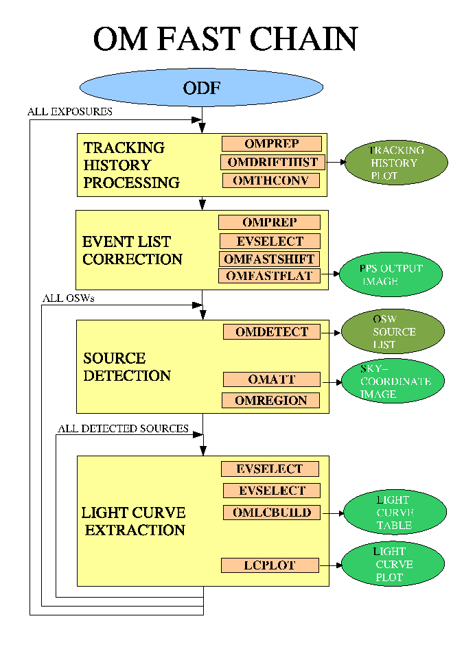

XMM-Newton Science Analysis System
omfchain (omfchain-1.42.6) [xmmsas_20170112_1337-16.0.0]
The location of the ODF files is specified by either setting the environment variable
SAS_ODF (setenv SAS_ODF directory-path), or by specifying the input directory
(omfchain inpdirectory=directory path), or by setting the environment variable
SAS_ODF to a SAS summary file. For the latter, the omfchain will extract the
directory path from the SAS summary file. Note that SAS-ODF should actually be
SASunderscoreODF- latex objects to underscores).
- Use command `omfchain` to process the ODF data set in the current
directory or to where SAS_ODF has been set to, and to place the product
files in the current directory.
- Use command `omfchain inpdirectory=input-directory-path` to process
the OM ODF data set in the specified directory, and to place the product files in the
current directory.
- Use command `omfchain outdirectory=output-directory-path` to process the
ODF data set in the current directory or to where SAS-ODF has been set to,
and to place the output files in the specified directory.
- Use command `omfchain inpdirectory=input-directory-path
outdirectory=output-directory-path` to specify both the location of the ODF
data set and the directory where the product files are to be placed.
Apart from the initial automatic creation of the flat-field image, the omfchain can be considered as being divided into 4 subsequent stages for
processing each window/event list (see figure 1).
Figure 1:
OM Fast Mode Pipeline
|  |
- Tracking history information is turned into graphic products and a file
used by the event-list analysis part of the chain.
- A tracking-shift and flat-field corrected image is created from the event
list.
- The image is source-searched and appropriate extraction regions defined.
- Background-subtracted light-curves are derived (on a per-exposure basis)
for each source from the event list and graphical products are generated.
These four processes run inside a loop over all exposures and all windows. In
addition, the last step is executed for all detected sources within each window
(see figure 1). Since the Fast-mode window is small, the background level
determined within this window is likely to be affected by the source counts.
Therefore, there exist an option of determining the background by using the
Imaging-mode data (if it is present for processed exposure in the ODF).
For this purpose the parameter bkgfromimage should be set to ``yes''.
This is particularly useful for relatively bright sources (with their count
rates exceeding, say, 0.6 counts per frame) because the source counts
dominate background within a certain region around the source, and when
the source gets brighter the radius of this region increases, eventually
occupying the entire Fist window. Then estimating the background level
from the accompanying Imaging window would be more accurate. In this
case it is also advisable to increase the source extraction region to the
12-pixel radius circle, so for bright sources it would be a good idea to
use the command `omfchain bkgfromimage=yes srcradius=-12'.
For faint sources this option is not recommendable because increasing
the source-extraction region leads to the decrease of the signal-to-noise ratio
(which is not important for bright sources). In some special cases
of very faint sources one can reduce the radius of the source-extraction
region from the default 6 pixels to, say, 3 pixels (srcradius=-3).
XMM-Newton SOC/SSC -- 2017-01-12